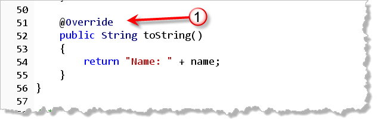
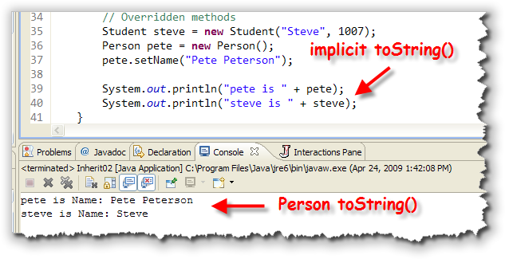
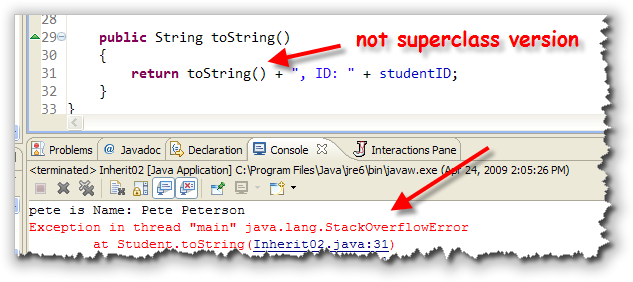
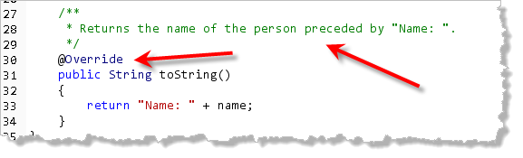
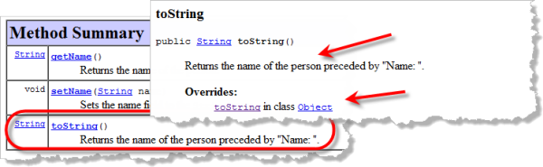
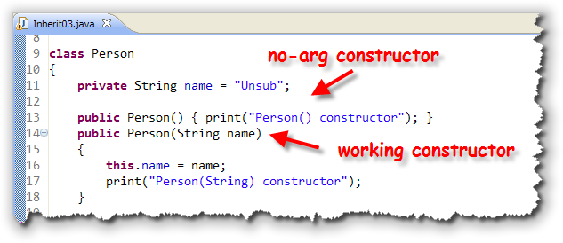
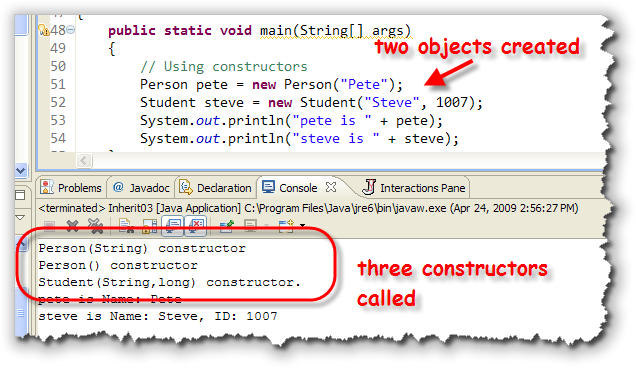
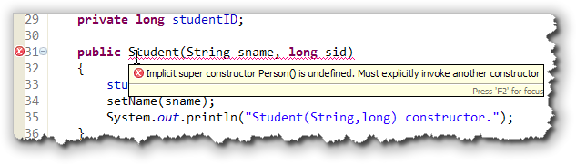
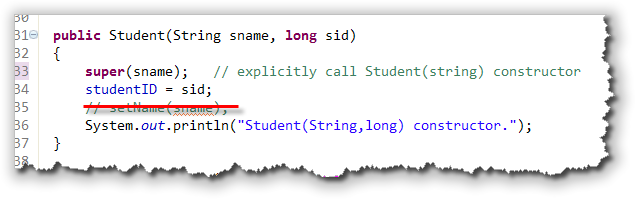
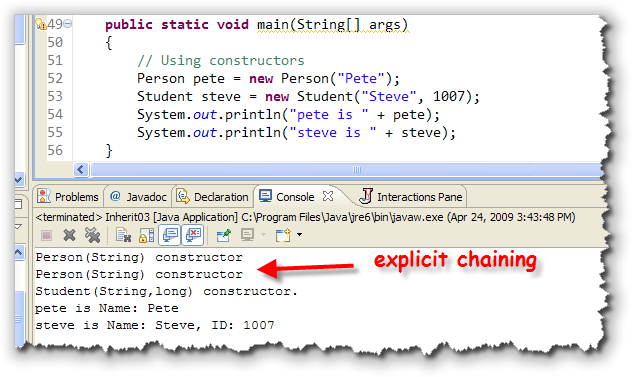

When an inherited method doesn't do exactly what you want, you can write a replacement method. This is called overriding the method. The new version of the method can either completely replace the existing version, or you can add some new actions to the original. (You can't however, just use some of the existing behavior.)
To illustrate this, we'll add toString() methods
to both of our demo classes.
The first change just adds toString() to the
bottom of the Person class like this:

When you override a method liketoString() you must:
- Use exactly the same number and type of
parameters as the original method in the superclass. There
are no conversions between
intanddoublefor instance. - Return exactly the same type as the original method.
- Use an access specifier that is at least as
permissive as the superclass method. In other words, you can't
override a
publicmethod with aprivatemethod.
The @Override annotation appearing before
the method header indicates to the Java compiler that you intend
to override a method that appears in an ancestor class.
This allows the Java compiler to double check each of the previous
rules for overriding, and to warn you if you inadvertently
break them. You should always use @Override
when overriding subclass methods.
With this new version of toString() our Inherit02
sample code looks like this when it runs:

Note that the variablepete prints out the name as
you'd expect (since pete is a Person
object). The variable steve also uses the
new overridden toString() method defined in Person,
instead of the original version defined in the Object
class.
When we replaced toString() for the Person
class, we also replaced it for all of its subclasses.
Writing Student toString()
Now, let's override toString() in the Student
class as well. Here's a first attempt:
 As you can see, though, the field
As you can see, though, the field name is not
accessible. This is the same problem we had earlier trying
to access name from the Student constructor.
There we were able to get around the problem by using the inherited
getName() accessor method, and we can do the same thing
here, like this:
 While this works, though, it doesn't take advantage of the fact
that we've already written the
While this works, though, it doesn't take advantage of the fact
that we've already written the toString()
code for the Person class. Essentially, in the
Student version of toString(), we're
writing exactly the same code again.
Isn't there some way we can run the original version of the
toString() method, and just add on the
new parts we want, like printing the student ID? Isn't there
some way we can combine inherited and overridden methods?
Yes, there is.
Calling Superclass Methods
As you saw earlier, the Student class automatically
inherited both the getName() and the
toString() methods from the Person
class. When we created a Student object, we could
use both of those methods just as if they were defined in the
student class.
Furthermore, when we defined new methods in the Student
class, we could call those inherited methods (such as
getName()), just as if they were defined inside
the Student class.
Let's see if we can put that to work by calling the inherited
version of toString(), which already prints the
object's name, from inside the new overridden toString()
method. Here's what that looks like, and here's what happens:

The good news is that doing this is not syntactically incorrect. The bad news is that your program blows up with aStackOverflowError when you try to run it.
The reason your program crashes is because when you call the
toString() method from inside a class that has
a definition for a toString() method, then the
overridden or Student version is used; it has
replaced the inherited Person version.
You are, in effect, calling the Student version
of toString() from inside itself. This
is called recursion and while it can be a powerful
problem-solving technique, doing it accidentally like this
usually results in a program crash.
The super Modifier
This problem is similar to the one we encountered when we
had instance variables and local variables that both had
the same name. When that happened, we were able to use the
special identifier named this to differentiate
between the two variables.
In this case we have an inherited superclass method named
toString() and an overridden subclass method
named toString().
We can differentiate between them by using the special
identifier named super, like this:
 Now, the overridden
Now, the overridden toString() method calls the
superclass toString() method to do a portion of
its work.
Don't confuse method overriding (which is what we're doing here), with method overloading. With overloading, two or more methods have the same name, but different parameter lists. Overloaded methods can exist in the same class or in a subclass. (This is different than C++). Overriding methods can only exist in a subclass and they must have exactly the same parameters and return type as the method that they are replacing.
Annotations and Documentation
When you override a method, you should tell the compiler
that you intend to override a subclass method by adding an
@Override annotation just before the class
header. This goes after any Javadoc comment you might
want to add, not inside the comment. Note that the
@Override annotation is capitalized, while the
Javadoc tags, like @author, are not.
Here is my recommended Javadoc and @override for the Person
version of toString():

Actually, when you do this, you don't have to provide a Javadoc comment at all, and your code will still pass all of the style checks. That's because when you override a method, the comments from the superclass are automatically inherited and added to an Overrides section inside the Javadoc method detail for that method. Normally, however, you'll want to supply both a Javadoc and
an @Override annotation, since the overridden
method is likely to act differently than the version it
overrides in the subclass. At a minimum, your Javadoc should
include a sentence describing what the method does. You
may, however, omit all @param tags, unless
the parameters somehow act differently in the subclass.
Here's what the resulting Javadoc looks like using those options:

You can see the Javadoc (provided you're running with the JDK, not the Eclipse compiler and the JRE) by right-clicking your file and selecting Preview Javadoc for File.Inheritance and Constructors
The last thing you'll need to master to work with inheritance is how it affects constructors. You remember that a class constructor must have the same name as the class. That means that when you create a new class, the new class doesn't inherit any of the superclass constructors. Instead, it needs to define new constructors of its own.
To see how that works, let's add two constructors to the
Person class, which currently uses only the
default constructor that is automatically written
by Java, when you don't supply any explicit constructors:

Both constructors just print a message so we can keep track of when they've been called. The working constructor uses itsString parameter to initialize the name
instance variable in addition to printing a diagnostic message.
I've also added a similar diagnostic message to the
Student class constructor.
The test program creates two objects, one Person and
one Student, and prints out their info, just like
the previous example. When we run some test code,
you'll see that instead of two constructors,
both Person constructors have been called,
along with the Student constructor:

Why is that?Constructor Chaining
When you call a subclass constructor, before the constructor can do any of its work, it first needs to make sure that its superclass constructor has been called. This happens before the first line in the subclass constructor ever runs.
You don't have to do anything special to make this happen.
When your constructor runs, if implicitly calls the no-arg
constructor in the superclass as its first line of code, and that
constructor calls its superclass constructor, and so on,
all the way up to the Object class. This is called
constructor chaining.
So, consider for a second, the Student class
constructor shown here:
 Even though you don't see it in the code,
in reality the following set of commands are run
when the
Even though you don't see it in the code,
in reality the following set of commands are run
when the Student construct is invoked
(after memory has been allocated and all instance variables
have been initialized):
- call the
Objectno-arg constructor - call the
Personno-arg constructor - assign the parameter to the instance variable
- call the
setName()inherited method - print the diagnostic message
That's why we saw three diagnostic messages in the sample program,
when we only created two objects. When we created the Student
object named steve, the Student constructor
first called the no-arg constructor for the Person
class. If the Object class no-arg constructor printed out
diagnostic messages, like our constructors do, then you won't have seen
two of those as well: one for the Student object and
one for the Person object.
Default and No-Arg Constructors
What happens if we remove the no-arg constructor from the
Person class? If you comment it out, you'll see that
it doesn't affect the Person class at all, but the
Student constructor stops working:

As the error message shown here points out, every time you extend a class, the superclass must:- have a no-arg constructor like
Person(), or - have a default constructor which is automatically written if the superclass has no explicit constructors, or
- the subclass (
Studentin this case) must explicitly call another constructor.
That's what we want to look at now. How exactly do you explicitly call a superclass constructor?
Calling super()
You remember when you wrote overloaded constructors in
Section 12.4—Constructors, that
you could invoke one constructor from another by using the special
syntax this(). When you use this() to call
another constructor, it needed to appear on the first line of the
method.
With inheritance, instead of calling another, overloaded constructor
in the same class, you can call a constructor in your immediate
superclass. Instead of using this(), you use
super() in a similar manner. As with this(),
super() must appear on the first line of the constructor
body. Of course that means you can use this() or
super(), not both.
Here's how you'd modify the Student constructor to call
the Person(String) constructor, instead of using
the setName() method, as we've done up until now:

Notice that thesetName() method can be removed altogether
once you do this. This is the normal way to write subclass constructors.
Now, when we run our sample program, instead of implicitly calling the
Person no-arg constructor (which no longer exists), we
explicitly chain to the Person(String) constructor
to initialize the name field:

Final Classes and Methods
Since subclasses are free to provide replacement methods for every public method defined in the superclass, it's possible for a subclass to replace a method that the original class designer wanted left alone.
If you look at the Person class, for instance, you
can see that the getName() method just returns the
name of the person. This method works fine as is, and there's
really no reason for a subclass to change it. Because of the
way the superclass was written, though, nothing prevents a
subclass from overriding it like this to change the way
the method works:
class Flatterer extends Person
{
public String getName()
{
return "Emperor " + super.getName();
}
}
Although the subclass has no access to the private
instance variable name, because the getName()
method could be overridden, the subclass was able to change the
access to this method.
To prevent this, when you design a base or superclass, you need
to consider which methods you want to allow others to extend
and which ones should be "set in stone". In our Person
class, there is no reason to let anyone change the way that
getName() or setName() work, so we can
seal them by using the keyword final like this:
When a method is marked final then subclasses are
prevented from overriding it.
Final Classes
When you are designing a collection of classes, you normally
won't want all of the classes to be extensible. In the Java
Class Libraries, for instance, there are several classes that
you can't extend, such as String and Math.
The designers of the Java Class Libraries felt that allowing
people to create their own versions of the String
class would open up various security holes in the language.
To prevent others from extending your class, just add
final to the class header, just like you
did for the method header. If you make a class non-extendable
by making it final, then there is no reason
to make the methods final as well.
Well that's it for the boring finger exercises. Let's get back to the fun stuff.

Overriding Methods Summary
- When an inherited method doesn't do exactly what you want, you can write a replacement method. This is called overriding the method.
- When overriding a method, you must use exactly the same
signature as the superclass method and return the
same type. You may make the access specifier more
permissive, making a
protectedmethodpublic. - When implementing an overridden method, you cannot access
any of the superclass variables (provided they are
privatein the superclass, which is the normal case). You may call any inherited superclass methods. - When implementing an overridden method, you may completely
replace the superclass implementation, or, combine the
original superclass implementation with additional code.
To make use of the original superclass method, simply
call the method, being sure to preface it with
the receiver
super. - If you call a superclass overridden method from the subclass
without using the prefix
super, then the method will call itself instead of the superclass version, something that is known as infinite recursion. Of course, since your computer's memory isn't infinite your program crashes with aStackOverflowError. - When you override a method, your implementation should be
preceded with an
@Overrideannotation to allow the compiler to warn you if you define the method signature incorrectly. You should add a Javadoc comment for overridden methods, but you don't have to. - With inheritance, constructors are not inherited because they have the same name as the class. Instead, when you construct a subclass object, the superclass default constructor is automatically called immediately before the code in the subclass constructor.
- If your superclass does not have a default or no-arg constructor,
then your subclass must have a constructor that explicitly
calls a specific superclass constructor on the first line of
each subclass constructor. This is done with the
super()"method" call. The version of the superclass constructor that is run depends on the types of the arguments passed tosuper(). - You may prevent inheritance by marking your superclass
methods as
final(to prevent overriding), or by marking the class itself asfinal(to prevent extension altogether).